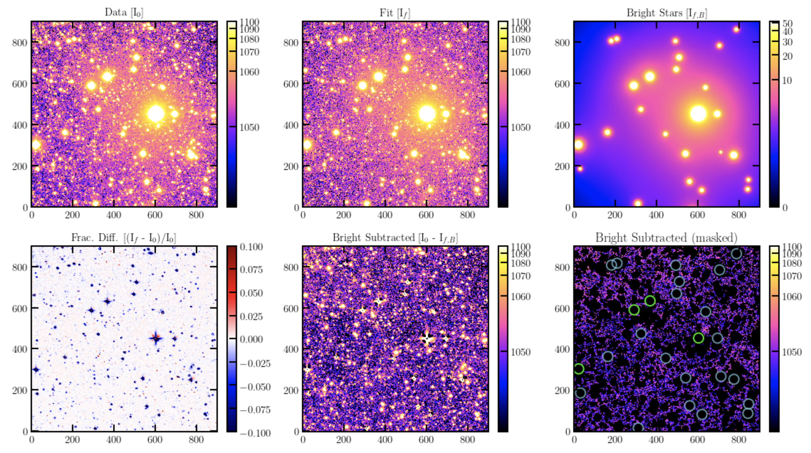
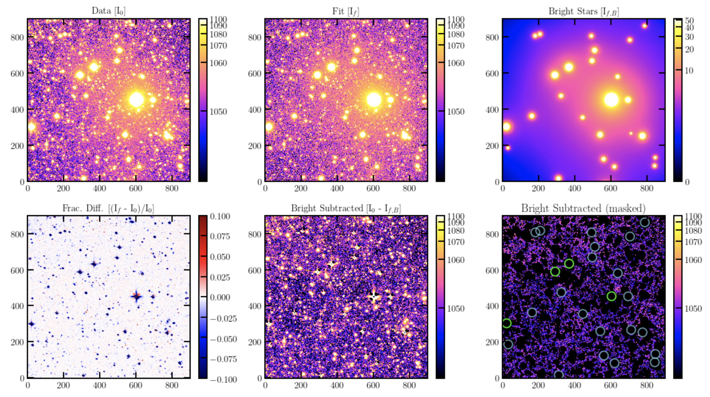

Examples¶
Here we show some examples of how elderflower works. The data is from the Dragonfly telescope. The examples below are run in the functional way, but they can be run in the same manner by feeding a configuration file with the keyword parameters replaced.
NGC3432¶
This example illustrates fitting multiple regions in an image. The data is the combined image of the NGC3432 field as part of the Dragonfly nearby edge-on galaxy survey.
obj_name = 'NGC3432'
work_dir = './NGC3432/'
filt = 'r'
fn = 'NGC3432/coadd_SloanR_NGC_3432_new.fits'
bounds = ((3400, 3000, 4400, 4000),
(1600, 2000, 2400, 2800),
(3000, 600, 4000, 1600))
Run_Detection(fn, obj_name, filt,
threshold=5, work_dir=work_dir,
ZP_keyname='REFZP', ZP=None)
Match_Mask_Measure(fn, bounds, obj_name, band="R",
ZP=27.15, field_pad=100, pixel_scale=2.5,
use_PS1_DR2=False, work_dir=work_dir)

 

M44¶